Diffusion Models
Welcome to this video on how to build diffusion models. After watching this video, you'll be able to: Explain the concept of diffusion models and their significance in machine learning. Demonstrate how to implement a basic diffusion model using Keras.
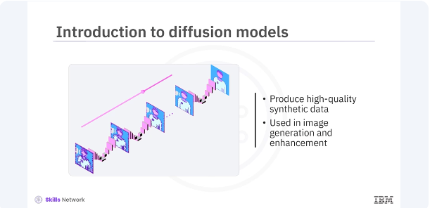
Diffusion models are a class of generative models that have recently gained popularity for their ability to produce high-quality synthetic data. They are used in various applications, including image generation and enhancement.
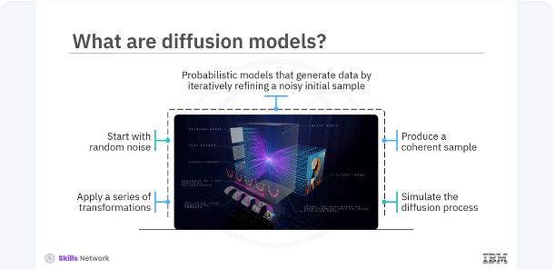
Diffusion models are probabilistic models that generate data by iteratively refining a noisy initial sample. They start with a random noise and gradually apply a series of transformations to produce a coherent data sample. The process is akin to simulating the physical process of diffusion, where particles spread out from regions of high concentration to regions of low concentration.
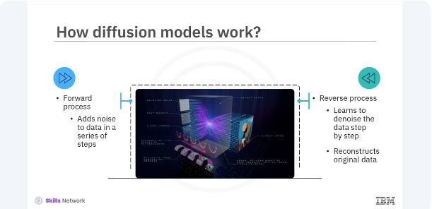
Diffusion models work by defining a forward process and a reverse process. The forward process adds noise to the data over a series of steps while the reverse process learns to denoise the data step by step, ultimately reconstructing the original data. This reverse denoising process is what allows diffusion models to generate high-quality samples from random noise.
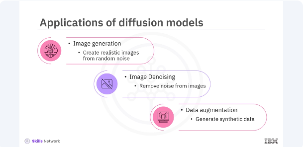
Diffusion models have several applications in the field of machine learning. Image generation, creating realistic images from random noise. Image denoising, removing noise from the images to enhance quality. Data augmentation, generating synthetic data to augment training data sets. These applications demonstrate the versatility and power of diffusion models in various domains.
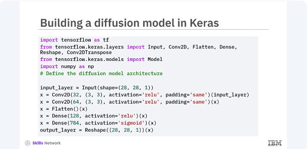
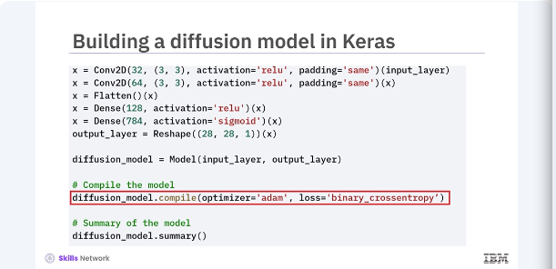
Let's build a basic diffusion model in Keras. You will start by defining the model architecture and then train it to learn the denoising process. In this code, you define a simple convolutional neural network, CNN, as your diffusion model. The model takes a noisy 28 by 28 image as input, processes it through a series of convolutional and dense layers, and outputs a denoised image of the same size. You compile the model using the Adam optimizer and binary cross-entropy loss.
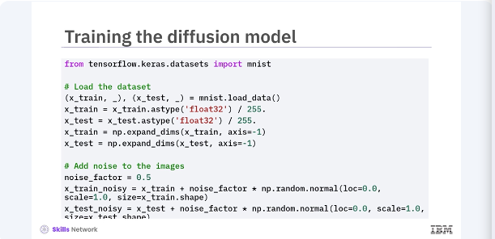
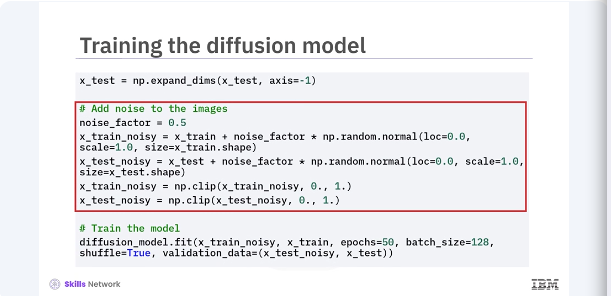
Next, you will prepare the MNIST dataset. add noise to the images train your diffusion model to denoise them. In this code, you load and pre-process the MNIST dataset set by normalizing the pixel values, and adding random noise to the images. The model is then trained using noisy images as input, and the original images as the target, teaching the model to denoise the images.
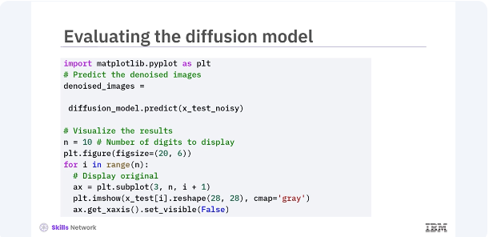
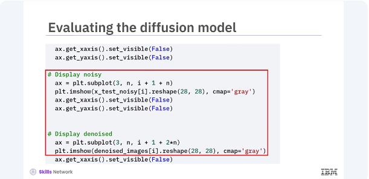
After training, you can evaluate the diffusion model's performance by visualizing the denoised images. Let's compare the original, noisy, and denoised images. This code generates predictions using the trained diffusion model and visualizes the results. By displaying the original, noisy, and denoised images side by side you can see how effectively the model has learned to remove noise from the images.
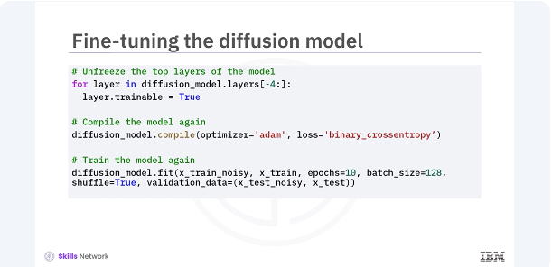
You can further improve the diffusion model by fine tuning it. Fine tuning involves adjusting the models parameters and retraining it for additional epochs. In this code, you unfreeze the last four layers of the diffusion model and recompile it. Training the model again for a few more epochs can help in fine tuning its performance, leading to better denoising results.
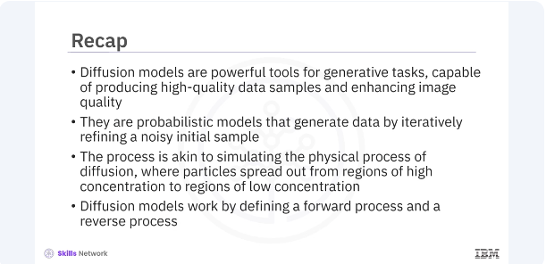
In this video, you learned diffusion models are powerful tools for generating tasks, capable of producing high-quality data samples, and enhancing image quality. They are probabilistic models that generate data by iteratively refining a noisy initial sample. The process is akin to simulating the physical process of diffusion where particles spread out from regions of high concentration to regions of low concentration. Diffusion models work by defining a forward process and a reverse process.